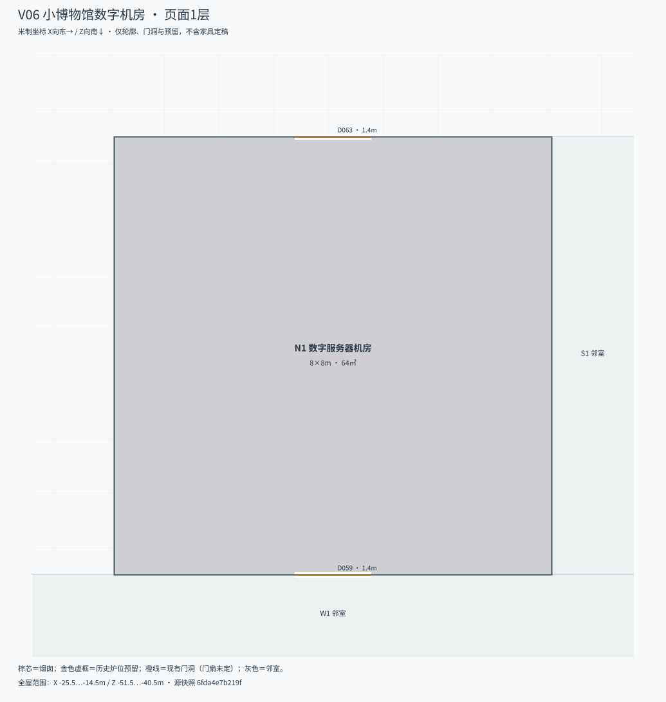

2026-11-07阶段收尾：V06数字机房、V07打铁修配间本轮只保留位置、功能和既有预留；没有必须补画的完整正文内景，暂不开展精细室内设计。现存V00及V01—V05交付、退回记录与验收标记原样保留，本次Git归档不提升其验收状态。
39-L明确私人Agent主机在小博物馆及停机留存；重点是机房用途和维护关系，没有完整机房内景桥段。
# V06 小博物馆数字机房 场地v13。本轮不细化：保留既有工业组预留。 39-L明确私人Agent主机在小博物馆及停机留存；重点是机房用途和维护关系，没有完整机房内景桥段。 ## 设计需求 - 64㎡原营业仓改机房，庄园片库/目录与私人Agent主机可分区；不要摆成面向公众的商业IDC或凭面积填满机柜。 - 主机、网络、存储、维护操作位和散热关系给可解释布局；设备数量、品牌、功率、容量没有既定值，提案须标明。 - 北门向后勤院、南门接工坊，均是现有门洞；正常维护不借机房作为库房通道，门禁与人员路线另排。 - 39-L讨论、语音终端和搬箱多在主屋，不能把整段对白搬进本机房。数据留存/停机与主屋终端收走是两个地点的动作。 - 保留独立散热、可维护性与客房噪声距离；数字机房不是原蒸汽锅炉房，也不是南岸主楼交换机柜。 ## 共同约束 本包以场地v13为准，先完成V00新宅联合分房，再细化V01—V05。旧平地A/B房间、门洞、楼梯和室内炉位不能当作固定几何。当前已定的是两层外包络、楼面、四处对外门口工作值、主梯重叠带、短廊、花园露台与候选烟囱；内部隔墙/门扇由V00具体设计并回写。 新宅一楼20.8m、二楼24m；老宅和工坊首层25.2m，老宅上层28.4m。X/Z为房屋局部坐标，heading=45°，并非正东/正南。新宅两层体量774㎡，老宅128㎡，合约902㎡，不是旧938㎡净房间统计。 原工坊改馆，新宅保留家庭居住；新宅不得设置展厅/展室或馆务后台。全组四间卧室＝新宅二楼三间普通客房（庄颜房＋普通客房A＋普通客房B；后两间前身为家庭卧室）＋老宅H9一间访客房，不能在新宅再造第四间。庄颜是普通客房，不是套房。原厕洗、旧铁炉与后世全屋热泵须保留分期，不能套用南岸主楼地暖方案。现代热泵房远置；旧锅炉房改账房/归档明确属于生产院S1/S2，不能搬进新宅或在新宅复制相同前身。 不要改正文。图形用统一俯视风格、标尺寸/坐标/家具编号；门洞需逐扇画开启和扫掠，检查床、桌椅、梯口和搬箱净空。变更固定接口时列原/新坐标及相邻影响，回写场地和拓扑。 新宅三间必须都是二楼24m的现代普通客房，不以主人卧室或楼下家庭卧室替代。真方位：局部+Z=135°东南，+X=45°东北，−X=225°西南，−Z=315°西北。 V00当前退回修改，未验收。交付几何保留作草案证据，不沿用其自报通过、门表冻结或楼梯/烟囱改动。先核对整组功能边界及逐室原用途→现用途，再细排门窗。 当前JSON中rooms/doors为空表示须由V00设计，不是房间没有门。禁止从旧包捡回D门号当固定条件。V06/V07的工业组门洞仍随各自JSON提供。 场地源SHA-256：99b741103d34cb466a7814c777d5e03d8839c55cbb9a6ec173d4be5411380187。

# 小博物馆数字机房 · 相关正文 逐行摘录，正文未改；场景中的猜测不当作硬陈设。 ## 39-L · 私人Agent位于小博物馆机房 来源：正文/第一部/39-L_是谁让她留下的.md，第9—17行。 ```text 9 | 表格没有按品牌排列。照明、窗帘、影音、家庭控制，后面才是机房和维护服务。有些东西属于不同的产品线，名称也不一样，最后一栏却常常落到同一个地方。 10 | 11 | 书房门开着。庄颜在走廊另一头同工作人员说话，问楼上的纸星能不能再往里挪一点，免得关窗帘时碰到。对方说可以，随后传来梯子挪动的声音。 12 | 13 | 罗辑低头，继续看表。 14 | 15 | 这不是第一次在家里看见这个牌子。他坐过它的车，用过它的屏幕，也知道自己的私人Agent运行在小博物馆那边的机房里。前些日子他还听庄颜讲过，星米怎样从做一类东西，变成什么都做。 16 | 17 | 当时他觉得挺有意思。 ``` ## 39-L · 本地推理、安装环境核查、停机留存；对白发生于主屋 来源：正文/第一部/39-L_是谁让她留下的.md，第137—153行。 ```text 137 | 说到机房时，他停了一下。 138 | 139 | “这里要另算。您的私人Agent也在这套系统里。” 140 | 141 | “它不是本地的吗？” 142 | 143 | “推理在本地。安装和维护它的环境也是这次核查的一部分。” 144 | 145 | 罗辑看了一眼桌边的语音终端。 146 | 147 | 工程师解释，如果需要把现有环境完整保留下来检查，就不能一边继续使用，一边把模型、配置和运行记录改来改去。可以停机留存，再准备一套干净的替代环境，但不是把旧模型拷过去便算完成。 148 | 149 | “多久？” 150 | 151 | “现在不能给您准确时间。” 152 | 153 | 罗辑没有马上回答。 ``` ## 39-L · 决定暂停Agent与联网部分 来源：正文/第一部/39-L_是谁让她留下的.md，第277—289行。 ```text 277 | 那么近。 278 | 279 | 这样的夜晚已经有过很多次。 280 | 281 | “没有。”他说，“目前没有。” 282 | 283 | 他没有撤掉警卫，也没有要求把庄颜叫来。他只让他们先核实事实，有结果直接找自己。 284 | 285 | 坎特临出门时又确认了一次设备安排。 286 | 287 | “消费联网部分按刚才的方案处理。Agent也先停。”罗辑说。 288 | 289 | “您确定？” ``` ## 39-L · 停用安排语境 来源：正文/第一部/39-L_是谁让她留下的.md，第307—313行。 ```text 307 | “Agent呢？” 308 | 309 | “也停。” 310 | 311 | “手机上也不能叫它了？” 312 | 313 | “这一套都不能。” ``` ## 39-L · 机房数据留存/主机关停，主屋终端另行搬出 来源：正文/第一部/39-L_是谁让她留下的.md，第331—337行。 ```text 331 | 午后，小博物馆机房里的相关数据完成留存，需要停用的主机也已关闭。主屋这边，技术人员开始收拾工具，把装好的箱子搬出去。 332 | 333 | *** 334 | 335 | 安保负责人离开主屋时，也对着已经撤掉的终端说了半句话。 336 | 337 | 他要找负责收梯子的工作人员。没人应，才想起以后这类事情得先联系值班室。 ```